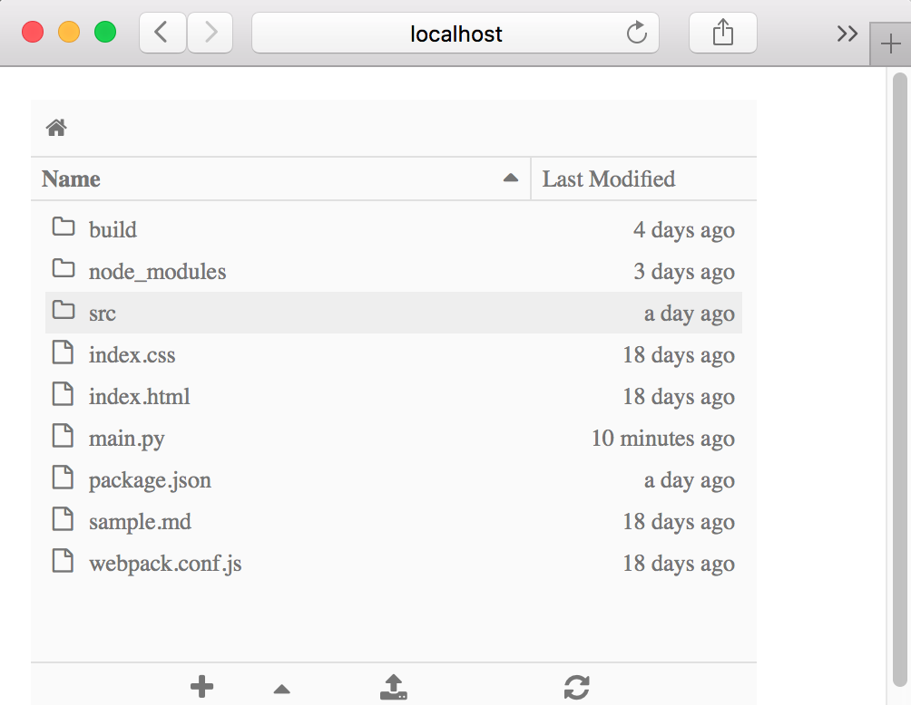
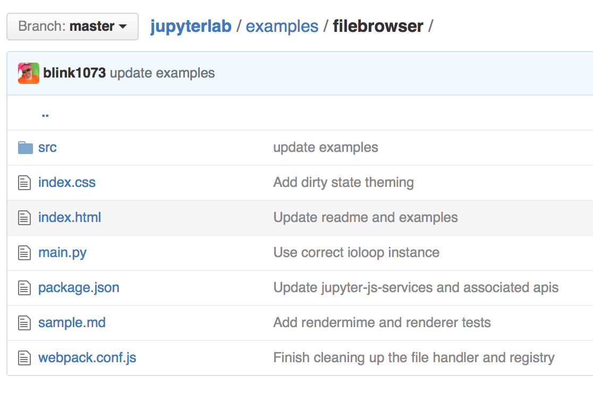

JupyterLab is built with many re-usable components that are independently published on npm. JupyterLab itself assembles these components together to provide a full, IDE-like experience. However, developers are encouraged to use these to bring to life their own visions of what a computational environment should look like.
The JupyterLab repository has many examples to get you started.
The examples directory contains:
examples
several stand-alone examples (console, filebrowser, notebook, terminal)
console
filebrowser
notebook
terminal
a more complex example (lab).
lab
Installation instructions for the examples are found in the project’s README.
After installing the jupyter notebook server 4.2+, follow the steps for installing the development version of JupyterLab. To build the examples, enter from the jupyterlab repo root directory:
jupyterlab
jlpm run build:examples
To run a particular example, navigate to the example’s subdirectory in the examples directory and enter:
python main.py
The filebrowser example provides a stand-alone implementation of a filebrowser. Here’s what the filebrowser’s user interface looks like:

Let’s take a closer look at the source code in examples/filebrowser.
examples/filebrowser
The filebrowser in examples/filebrowser is comprised by a handful of files and the src directory:
src

The filebrowser example has two key source files:
src/index.ts: the TypeScript file that defines the functionality
src/index.ts
main.py: the Python file that enables the example to be run
main.py
Reviewing the source code of each file will help you see the role that each file plays in the stand-alone filebrowser example.